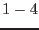
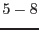
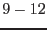

XMM-Newton Science Analysis System
epevents (epevents-6.50.1) [xmmsas_20170112_1337-16.0.0]
. . .
single event . X .
. . .
. . . . . . . . . . . . . . . . . . . .
. . x . . . . . . . . . . . . . . . . .
double pattern . . X . . . . X x . . . X . . . x X . .
. . . . . . . . . . . . x . . . . . . .
. . . . . . . . . . . . . . . . . . . .
. . . . . . . . . . . . . . . . . . . .
. . x . . . . x . . . . . . . . . . . .
triple pattern . x X . . . . X x . . . X x . . x X . .
. . . . . . . . . . . . x . . . . x . .
. . . . . . . . . . . . . . . . . . . .
. . . . . . . . . . . . . . . . . . . .
. m x . . . . x m . . . . . . . . . . .
quadruple pattern . x X . . . . X x . . . X x . . x X . .
. . . . . . . . . . . . x m . . m x . .
. . . . . . . . . . . . . . . . . . . .
Here '.' marks a pixel without an event above the threshold,
`X' is the pixel with the maximum charge (``main pixel")
`x' is the pixel with a non-maximum charge,
`m' is the pixel with the minimum charge.
These 13 figures refer to the SAS PATTERN codes
0, , , and , respectively).
XMM-Newton SOC/SSC -- 2017-01-12